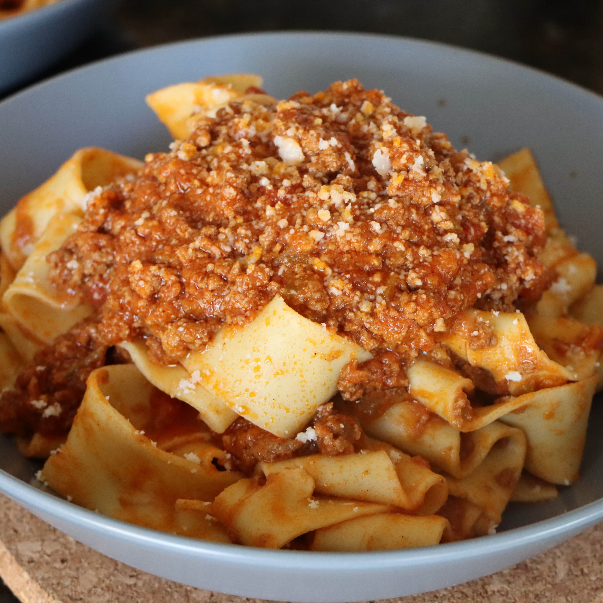

Link to Home
Bolognese

An Italian Classic
This bolognese recipe is perfect with nachos, lasagna, with spaghetti, or even on top of a hot dog!
Ingredients for 6 servings
1 tbsp olive oil
2 medium onions (finely chopped)
2 carrots (trimmed, finely chopped)
2 garlic cloves (finely chopped)
2-3 sprigs rosemary (leaves picked and finely chopped)
500g beef mince
2 x 400g tins plum tomatoes
small bunch of basil leaves (picked, finely chopped and can leave some for garnish)
1 tsp dried oregano
2 fresh bay leaves
2 tbsp tomato purée
1 beef stock
1 red chilli (de-seeded finely chopped)
4 rashers smoked streaky bacon (finely chopped)
2 celery sticks (finely chopped)
125ml Red Wine
Steps
Here is how you make it:
Put a large saucepan on a medium heat and add 1 tbsp olive oil.
Add chopped bacon rashers and fry for 10 mins until golden and crisp.
Reduce the heat and add the onions, carrots, celery, garlic and rosemary, all finely chopped. Fry for 10 mins or until veg softens.
Increase the heat to medium-high, add beef mince (breaking it up) and stir in for 3-4 mins until the meat is browned all over.
Add plum tomatoes, chopped basil, dried oregano, bay leaves, tomato purée, beef stock, red chilli, and 125ml red wine. Stir to combine.
Bring to the boil, reduce to a gentle simmer and cover with a lid. Cook for 1 hr 15 mins stirring occasionally, until sauce thickens.
Check the taste, and season appropriately.